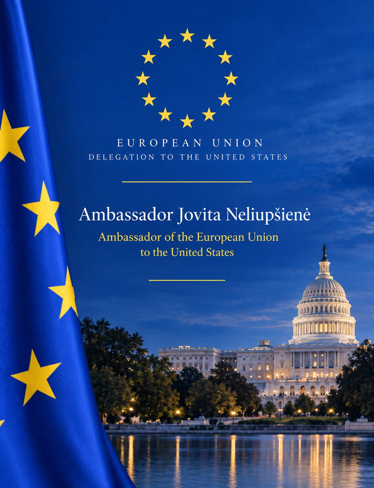

What is Alliances That Sustain America?
Alliances That Sustain America is an essay contest for middle and high school students across Fairfax County Public Schools. You choose a moment when Europe and the United States worked together, research it, and write a short essay on how it shaped the American story.
The Langley World Affairs Club runs the contest with the Delegation of the European Union to the United States, to mark the 250th anniversary of the Declaration of Independence. It builds on the 2025 Bernardo de Gálvez Essay Contest, which the club developed with the Embassy of Spain to explore Spain's role in American independence.

A message from Ambassador
Jovita Neliupšienė
Washington, D.C., 17 September 2026

Dear Fairfax County Public Schools Students and Community,
What helps a nation endure for 250 years?
As the United States commemorates its 250th anniversary, I invite you to participate in the Alliances That Sustain America Essay Contest, an opportunity to explore the enduring partnership between the United States and Europe and its importance throughout American history.
I am pleased that the Delegation of the European Union to the United States is partnering with Ryan Minton, Founder and President of the Langley World Affairs Club, on this student-led educational initiative. Together, we invite students across Fairfax County Public Schools to examine the history of the transatlantic relationship and consider how cooperation between the United States and Europe has contributed to peace, prosperity, innovation, and shared democratic values.
This essay contest invites you to explore the EU–U.S. alliance through a historical lens. You may focus on a particular period, event, or area of cooperation, or examine how the partnership has evolved over time to address common challenges and opportunities.
History is much more than a collection of names and dates. It helps us understand people, ideas, and relationships. The partnership between Europe and the United States has grown over generations, adapting to changing circumstances while remaining rooted in shared values and common interests. As you explore this history, I hope you will discover how international cooperation continues to shape our world and why strong partnerships remain important for future generations.
Like you, I was once a student with big questions about the world beyond my hometown. Growing up in Lithuania, I became curious about the past, different cultures, and how countries work together. That curiosity eventually led me to a career in diplomacy. Looking back, I realize that asking thoughtful questions, listening carefully, and learning from others have been among valuable lessons in my life.
Every meaningful discovery begins with a thoughtful question. I admire every student who chooses to take on a challenging question and pursue it through thorough research and careful investigation. Those habits will serve you well throughout your education and far beyond it.
Good luck. I look forward to celebrating the curiosity, creativity, and thoughtful work that this initiative inspires.

New to essay contests? Start here.
If you're thinking about entering but aren't sure, I hope you'll give it a try. This may be your first essay contest. You may not know much about the topic yet, or where to begin. That's fine. Start wherever you are.
You don't have to figure out the whole contest at once. Begin with Step 1 below; each step takes you a little further.
And don't do this entirely on your own. Good researchers and writers ask questions and get feedback. Reach out to a teacher, parent or guardian, librarian, tutor, older student, or an AI tool. If you're not sure how to ask, you can send them this message:
“I'm entering a historical essay contest about how the relationship between Europe and the United States has shaped the American story. It is not a persuasive essay. I'm supposed to investigate the history, examine the evidence, and let my research lead me to my own conclusion. The thinking and final writing need to be mine, but getting help along the way is encouraged. Would you look at the contest page with me? I'd really appreciate your help choosing a topic, finding reliable sources, thinking through the evidence, and giving me feedback as I write and revise my essay.”
I hope you'll give it a shot.
How to enter, in six steps
Understand the prompt
Choose a historical period, event, alliance, or area of cooperation between Europe and the United States. Investigate what brought the two sides together, what challenged or changed their relationship, and why it mattered to the United States.
Know the requirements
Length. Up to 650 words. Your title, citations, and bibliography don't count toward the limit.
Sources. Use reliable sources, cite them, and include a brief bibliography.
Help and AI. Getting help is encouraged, whether from a person or an AI tool like ChatGPT, Gemini, or Claude. Say what help you received and how you used it. The thinking, conclusions, and final writing must be your own.
Plan and write
Plan first. Choose your focus, do your research, and organize your ideas before you write.
Analyze, don't persuade. Don't start with a position you're trying to prove. Examine what shaped the relationship, what challenged or changed it, and why it mattered, and let the evidence lead you to your conclusion.
Title it last. Once the essay is finished, give it a title that reflects its focus.
Submit your essay
Check your essay against the Step 2 requirements, then paste your essay, title, and sources into the online form by Tuesday, December 1, 2026, at 11:59 p.m. ET.
How essays are judged
Each essay is scored independently on the same rubric. There is no expected conclusion.
- Historical understanding
- Is the history accurate?
- Analysis
- Does it explain why events mattered, beyond summarizing them?
- Use of evidence
- Is it built on specific, reliable evidence?
- Organization
- Do the ideas follow clearly and logically?
- Clarity of writing
- Is it clear, focused, and easy to follow?
Recognition and results
Essays compete in two divisions, middle school (grades 7–8) and high school (grades 9–12), with first, second, and third place in each. Additional recognitions may be awarded.
Award recipients will be invited to the Delegation of the European Union to the United States, which represents the EU's 27 member states, for a recognition event in Washington, D.C., marking America's 250th anniversary. The date will be announced once confirmed.
Every participant will get an update after judging, and winners will be posted on this page.